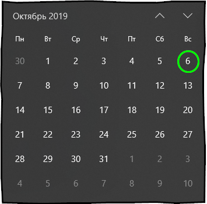
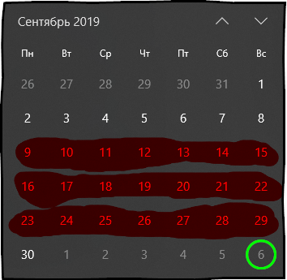

Работа с датами на языке R (базовые возможности, а также пакеты lubridate и timeperiodsR)
Получить текущую дату в любом языке программирования, операция эквивалентная “Hello world!”. Язык R не является исключением.
В этой статье мы разберёмся с тем, как устроена работа с датами в базовом синтаксисе языка R, а также рассмотрим несколько полезных пакетов, расширяющих его возможности при работе с датами:
lubridate— пакет позволяющий производить арифметические вычисления между датами;timeperiodsR— пакет для работы с временными интервалами и их компонентами.

Впервые статья была опубликована на Хабре
Содержание
Если вы интересуетесь анализом данных, и в частности языком R, возможно вам будут интересны мои telegram и youtube каналы. Большая часть контента которых посвящена языку R.
- Работа с датами в базовом синтаксисе R
1.1. Преобразование текста в дату
1.2. Извлечение компонентов даты в базовом R - Работа с датами с помощью пакета lubridate
2.1. Преобразование текста в дату с помощью lubridate
2.2. Извлечение компонентов дат с помощью пакета lubridate
2.3. Арифметические операции с датами - Упрощённая работа с периодами, пакет timeperiodsR
3.1. Временные интервалы в timeperiodsR
3.2. Фильтрация вектора дат с помощью timeperiodsR - Заключение
Работа с датами в базовом синтаксисе R
Преобразование текста в дату
В базовом R присутствует набор функций для работы с датами. Минус базового синтаксиса заключается в том, что регистр имён и аргументов функций очень разрознен, и практически не имеет логической связи. Тем не менее, базовые функции языка надо знать, поэтому начнём мы именно с них.
Наиболее часто при загрузке данных в R, из csv файлов, или других источников, вы получаете дату в виде текста. Для того, что бы привести этот текст к правильному типу данных используйте функцию as.Date().
# создаём текстовый вектор с датами
my_dates <- c("2019-09-01", "2019-09-10", "2019-09-23")
# проверяем тип данных
class(my_dates)
#> [1] "character"
# преобразуем текст в дату
my_dates <- as.Date(my_dates)
# проверяем тип данных
class(my_dates)
#> [1] "Date"
По умолчанию as.Date() принимает дату в двух форматах: ГГГГ-ММ-ДД или ГГГГ/ММ/ДД.
Если в вашем наборе данных даты представлены в каком либо другом формате, для преобразования можно использовать аргумент format.
as.Date("September 26, 2019", format = "%B %d, %Y")
format принимает в строковом виде операторы обозначающие какой-либо временной интервал и его формат, наиболее часто используемые значения приведены в таблице ниже:
| Формат | Описание |
|---|---|
| %d | Номер дня в месяце |
| %a | Аббревиатура названия дня недели |
| %A | Полное название дня недели |
| %w | Номер дня недели (0-6, где 0 это воскресенье) |
| %m | Двухзначное обозначение месяца (01-12) |
| %b | Аббревиатура имени месяца (apr, mar, …) |
| %B | Полное название месяца |
| %y | Двухзначное обозначение года |
| %Y | Четырёхзначное обозначение года |
| %j | Номер дня в году (001 — 366) |
| %U | Номер недели в году (00 — 53), начало недели Воскресенье |
| %W | Номер недели в году (00 — 53), начало недели Понедельник |
Соответственно, “September 26, 2019” это — полное название месяца, число и год. Описать этот формат даты операторами можно так:"%B %d, %Y".
Где:
%B— Полное название месяца%d— Номер дня в месяце%Y— Четырёхзначное обозначение года
При описании формата даты важно включать все доп символы из вашей строки, например тире, запятые, точки, пробелы и так далее. В моём примере, “September 26, 2019”, после даты стоит запятая, и в описание формата так же надо ставить запятую:"%B %d, %Y".
Бывают ситуации, когда вы получаете дату не только не соответствующую стандартным форматам (ГГГГ-ММ-ДД или ГГГГ/ММ/ДД), но ещё и на языке, который отличается от установленного в вашей операционной системе по умолчанию. Например, вы загрузили данные, где дата указана вот в таком виде: “Декабрь 15, 2019 г.”. Перед конвертацией этой строки в дату вам необходимо поменять локаль.
# Меняем локаль
Sys.setlocale("LC_TIME", "Russian")
# Конвертируем строку в дату
as.Date("Декабрь 15, 2019 г.", format = "%B %d, %Y")
Извлечение компонентов даты в базовом R
В базовом R не так много функций позволяющих извлекать какую либо часть даты из объекта класса Date.
current_date <- Sys.Date() # текущая дата
weekdays(current_date) # получить номер дня недели
months(current_date) # получить номер месяца в году
quarters(current_date) # получить номер квартала в году
Помимо основного класса объектов Date в базовом R есть ещё 2 типа данных которые хранят отметку времени: POSIXlt, POSIXct. Основное отличие этих классов от Date заключается в том, что кроме даты они хранят время.
# получить текущую дату и время
current_time <- Sys.time()
# узнать класс объекта current_time
class(current_time)
# "POSIXct" "POSIXt"
Функция Sys.time() возвращает текущую дату и время в формате POSIXct. Этот формат по смыслу похож на UNIXTIME, и хранит в себе количество секунд с момента начала эры UNIX (полночь (по UTC) с 31 декабря 1969 года на 1 января 1970).
Класс POSIXlt так же хранит в себе время и дату, и все их компоненты. Поэтому является объектом с более сложной структурой, но из которого легко получить любой компонент даты и времени т.к. по сути POSIXlt это list.
# Получаем текущую дату и время
current_time_ct <- Sys.time()
# Преобразуем в формат POSIXlt
current_time_lt <- as.POSIXlt(current_time_ct)
# извлекаем компоненты даты и времени
current_time_lt$sec # секунды
current_time_lt$min # минуты
current_time_lt$hour # часы
current_time_lt$mday # день месяца
current_time_lt$mon # месяц
current_time_lt$year # год
current_time_lt$wday # день недели
current_time_lt$yday # день года
current_time_lt$zone # часовой пояс
Преобразование числовых и текстовых данных в форматы POSIX* осуществляются функциями as.POSIXct() и as.POSIXlt(). Данные функции имеют небольшой набор аргументов.
- x — Число, строка или объект класса Date, который необходимо преобразовать;
- tz — Часовой пояс, по умолчанию “GMT”;
- format — Описание формата даты в которым представлены данные передаваемые в аргумент x;
- origin — Используется только при конвертации числа в POSIX, в этот аргумент необходимо передать объект даты, и времени от которого идёт отсчёт секунд. Как правило, используется для перевода из UNIXTIME.
Если ваши данные о дате и времени представлены в UNIXTIME, то для их конвертации в понятную, читаемую дату используйте следующий пример:
# Конвертируем UNIXTIME в читаемую дату
as.POSIXlt(1570084639, origin = "1970-01-01")
В origin вы можете указать любую временную метку. Например, если в ваших данных дата и время указаны как количество секунд начиная от 15 сентября 2019 года 12:15, то для преобразования их в дату используйте:
# Конвертируем UNIXTIME в дату учитывая что начало отсчёта 15 сентября 2019 12:15
as.POSIXlt(1546123, origin = "2019-09-15 12:15:00")
Работа с датами с помощью пакета lubridate
lubridate пожалуй самый популярный пакет для работы с датами на языке R. Он предоставляет вам дополнительно ещё три класса.
- durations — длительность, т.е. количество секунд между двумя временными метками;
- periods — периоды позволяют производить вычисления между датами понятными для человека интервалами: днями, месяцами, неделями и так далее;
- intervals — объекты предоставляющие начальный и конечный момент времени.
Установка дополнительных пакетов в языке R осуществляется стандартной функцией install.packages().
Установка пакета lubridate:
install.packages("lubridate")
Преобразование текста в дату с помощью lubridate
Функции пакета lubridate значительно упрощают процесс конвертации текста в дату, а так же позволяют вам проводить любые арифметические операции с датами и временем.
Получить текущую дату, или дату и время вам помогут функции today() и now().
today() # текущая дата
now() # текущая дата и время
Для преобразования строки в дату в lubridate есть целое семейство функций имена которых состоят всегда из трёх букв, и обозначают последовательность компонентов даты:
- y — год
- m — месяц
- d — день
Список функций для преобразования текста в дату через lubridate
ymd()ydm()mdy()myd()dmy()dym()yq()
Несколько примеров для преобразования строк в даты:
ymd("2017 jan 21")
mdy("March 20th, 2019")
dmy("1st april of 2018")
Как видите lubridate значительно более эффективно умеет распознавать описание дат в виде текста, и позволяет вам преобразовывать текст в дату не используя дополнительных операторов для описания формата.
Извлечение компонентов дат с помощью пакета lubridate
Также с помощью lubridate можно получить любой компонент из даты:
dt <- ymd("2017 jan 21")
year(dt) # год
month(dt) # месяц
mday(dt) # день в месяце
yday(dt) # день в году
wday(dt) # день недели
Арифметические операции с датами
Но, наиболее важный и основной функционал lubridate заключается в возможности производить различные арифметические операции с датами.
Округление даты осуществляется тремя функциями:
floor_date— округление к ближайшему прошедшему времениceiling_date— округление к ближайшему будущему времениround_date— округление к ближайшему времени
Каждая из этих функций имеет аргумент unit, который позволяет вам указать единицу округления: second, minute, hour, day, week, month, bimonth, quarter, season, halfyear, year
dt <- ymd("2017 jan 21")
round_date(dt, unit = "month") # округлить до месяца
round_date(dt, unit = "3 month") # округлить до 3 месяцев
round_date(dt, unit = "quarter") # округлить до квартала
round_date(dt, unit = "season") # округлить до сезона
round_date(dt, unit = "halfyear") # округлить до полугодия
Итак, давайте разберёмся с тем, как получить дату, которая будет через 8 дней после текущей даты и проводить различные другие арифметические вычисления между двумя датами.
today() + days(8) # какая дата будет через 8 дней
today() - months(2) # какая дата была 2 месяца назад
today() + weeks(12) # какая дата будет через 12 недель
today() - years(2) # какая дата была 2 года назад
Упрощённая работа с периодами, пакет timeperiodsR.
timeperiodsR — свежий пакет для работы с датами который был опубликован на CRAN в сентябре 2019 года.
Установка пакета timeperiodsR:
install.packages("timeperiodsR")
Основное назначение — быстрое определение некоторого временного интервала относительно заданной даты. Например с помощью его функций вы легко можете:
- Получить прошлую неделю, месяц, квартал или год в R.
- Получить заданное количество временных интервалов относительно даты, например прошлые 4 недели.
- Легко извлекать из полученного временного интервала его компоненты: начальную и конечную дату, количество дней попавших в интервал, всю последовательность дат которые в него входят.
Название всех функций пакета timeperiodsR интуитивно понятны, и состоят из двух частей: направление_интервал, где:
- направление в котором необходимо двигаться относительно заданной даты: last_n, previous, this, next, next_n.
- временной интервал для вычисления периода: day, week, month, quarter, year.
Полный набор функций:
Временные интервалы в timeperiodsR
Эти функции полезны в случаях, когда вам необходимо строить отчёты на основе данных за прошлую неделю или месяц. Чтобы получить прошлый месяц воспользуйтесь одноимённой функцией previous_month():
prmonth <- previous_month()
После чего у вас будет объект prmonth класса tpr, из которого легко можно получить следующие компоненты:
- дату начала периода, в нашем примере это прошлый месяц
- дату завершения периода
- количество дней входящих в период
- последовательность дат входящих в период
Причём получить каждый из компонентов можно разными способами:
# первый день периода
prmonth$start
start(prmonth)
# последний день периода
prmonth$end
end(prmonth)
# последовательность дат
prmonth$sequence
seq(prmonth)
# количество дней входящих в период
prmonth$length
length(prmonth)
Также вы можете получить любой из компонентов используя аргумент part, который присутствует в каждой из функций пакета. Возможные значения: start, end, sequence, length.
previous_month(part = "start") # начало периода
previous_month(part = "end") # конец периода
previous_month(part = "sequence") # последовательность дат
previous_month(part = "length") # количество дней в периоде
Итак, давайте рассмотрим все аргументы доступные в функциях пакета timeperiodsR:
x— Опорная дата от которой будет вычислять временной период, по умолчанию текущая дата;n— Количество интервалов которые будут входить в период, например 3 предыдущие недели;part— Какой компонент объектаtprвам необходимо получить, по умолчаниюall;week_start— Аргумент присутствует только в функциях для работы с неделями, и позволяет задать номер дня недели который будет считаться её началом, по умолчанию началом недели является понедельник, но вы можете задать любой с 1 — понедельник по 7 — воскресенье.
Таким образом, вы можете вычислять любой временной период относительно текущей, либо любой другой заданной даты, приведу ещё несколько примеров:
# получить 3 прошлые недели
# от 6 октября 2019 года
# начало недели - понедельник
last_n_weeks(x = "2019-10-06",
n = 3,
week_start = 1)
Time period: from 9 September of 2019, Monday to 29 September of 2019, Sunday
6 октября это воскресенье:

Нам необходим период, который относительно 6 октября возьмёт 3 предыдущие недели. Не включая неделю, в которую входит само 6 октября. Соответственно это период с 9 по 29 сентября.

# получить месяц отстающий на 4 месяца
# от 16 сентября 2019 года
previous_month(x = "2019-09-16", n = 4)
Time period: from 1 May of 2019, Wednesday to 31 May of 2019, Friday
В этом примере нас интересует месяц, который был 4 месяца назад, если отталкиваться от 16 сентября 2019 года, соответственно это был май 2019 года.
Фильтрация вектора дат с помощью timeperiodsR
Для фильтрации дат в timeperiodsR есть несколько операторов:
- %left_out% — сравнивает два объекта класса tpr, и возвращает значение из левого, которые отсутствуют в правом.
- %left_in% — сравнивает два объекта класса tpr, и возвращает даты из левого объекта которые входят в правый.
- %right_out% — сравнивает два объекта класса tpr, и возвращает значение из правого, которые отсутствуют в левом.
- %right_in% — сравнивает два объекта класса tpr, и возвращает даты из правого объекта которые присутвуют в левом.
period1 <- this_month("2019-11-07")
period2 <- previous_week("2019-11-07")
period1 %left_in% period2 # получить даты из period1 которые входят в period2
period1 %left_out% period2 # получить даты из period1 которые не входят в period2
period1 %right_in% period2 # получить даты из period2 которые входят в period1
period1 %right_out% period2 # получить даты из period2 которые не входят в period1
У пакета timeperiodsR есть официальный, русскоязычный плейлист на YouTube.
Заключение
Мы подробно рассмотрели классы объектов которые предназначены в языке R для работы с датами. Также теперь вы умеете проводить над датами арифметические операции, и быстро получать любые временные периоды с помощью пакета timeperiodsR.
Если вам интересен язык R приглашаю вас подписаться на мой телеграмм канал R4marketing, в котором я на ежедневной основе делюсь полезными материалами о применении языка R в решении своих повседневных задач.